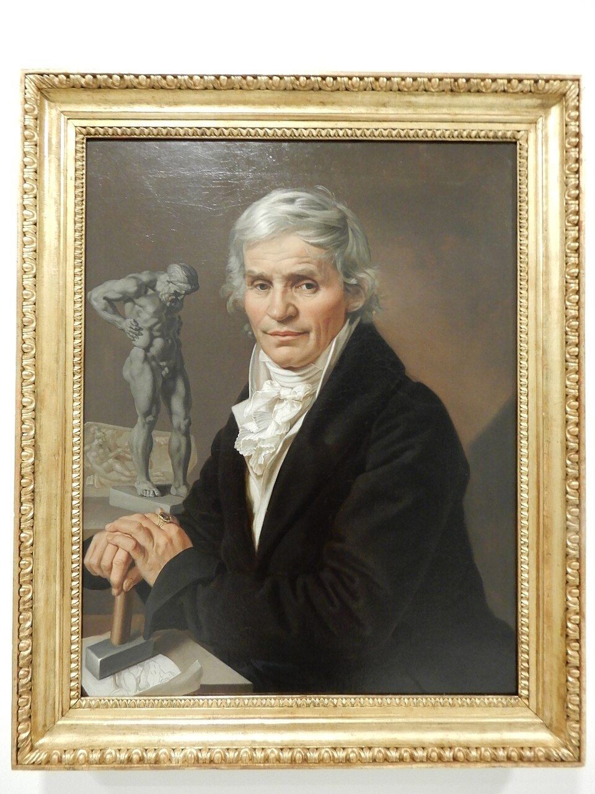

Portrét sochaře Malínského
I

Portrét sochaře Malínského (1818)
1. Příběh, který obraz zobrazuje (Ikonografie a námět)
Obraz zachycuje předního českého empírového sochaře a řezbáře Josefa Malínského u rozpracovaného díla. Z jeho tváře vyzařuje soustředění, intelektuální hloubka a hrdé sebevědomí měšťanského umělce nastupujícího národního obrození.
2. Příběh vzniku díla (Umělecko-historický kontext)
Antonín Machek opustil chladnou aristokratickou stylizaci a vytvořil vřelý, psychologicky pravdivý portrét svého blízkého přítele. Vyniká detailní modelace tváře a civilní přirozené světlo.
3. Historie a provenience obrazu
Portrét patří k nejvýznamnějším dokladům raného měšťanského portrétu v Čechách a reprezentuje kulturní elitu probouzející se Prahy počátku 19. století.